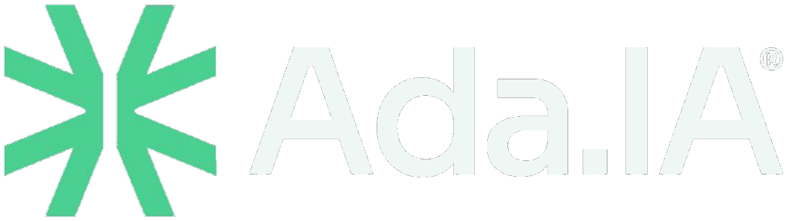

01 / EMPRESAS
ADA Business.
Marca, relacionamento e operação trabalhando juntos para reduzir atritos e sustentar crescimento.
Explorar meu cenário
INTELIGÊNCIA APLICADA A NEGÓCIOS 01 / 08
Transformamos gargalos de marca, comunicação e operação em sistemas inteligentes de crescimento e eficiência.
O PROBLEMA REAL
Quando marca, atendimento, marketing, sistemas e dados não conversam, a organização perde velocidade e visibilidade. Começamos pelo ponto onde o trabalho trava.
O QUE SUA EQUIPE SENTE
O cidadão ou cliente fala com a organização, mas a demanda depende de alguém lembrar de encaminhar, registrar e responder.
MÉTODO A.D.A.
Mapeamos a jornada, os responsáveis, os canais e as rupturas que custam tempo, qualidade ou oportunidades.
DA MENSAGEM À DECISÃO
Uma boa resposta inicia o fluxo. A inteligência está em conectar demanda, equipe, registro e acompanhamento.
“Olá! Preciso de informações sobre o serviço e quero falar com alguém.”
A mensagem entra pelo canal escolhido. O próximo passo é organizar o que foi solicitado.
Demonstração conceitual. Funcionalidades e integrações dependem da configuração, escopo e validação de cada projeto.
CADA ORGANIZAÇÃO TEM UM DESAFIO
O trabalho começa pelo problema. As capacidades são combinadas conforme a realidade, a equipe e os resultados que precisam ser acompanhados.
Marca, relacionamento e operação trabalhando juntos para reduzir atritos e sustentar crescimento.
Explorar meu cenárioUma jornada organizada entre cidadão, atendimento, secretaria e gestão, com responsáveis e acompanhamento.
Explorar meu cenárioOrganização de canais, rotinas, conteúdo e relacionamento para equipes de campanhas e mandatos, com revisão humana.
Conhecer a verticalOs produtos não são caixas isoladas. São recursos de uma arquitetura coerente.
Relacionamento e operação: canais, registro, CRM, agenda, acompanhamento e visão gerencial.
Conhecimento organizado em especialistas digitais contextualizados, com limites e supervisão.
Branding, direção criativa e produção com critério humano e execução acelerada.
ESTRATÉGIA + DIREÇÃO DE ARTE + TECNOLOGIA
Exploramos possibilidades com velocidade. A curadoria, o posicionamento e as decisões que constroem uma marca continuam com direção humana.
A EXPERIÊNCIA POR TRÁS DA ADA
Nasceu da combinação entre anos de experiência em comunicação, branding, direção de arte e marketing com uma nova capacidade de desenhar e executar sistemas inteligentes.
Mais de duas décadas em publicidade, design, branding e direção criativa. A ADA é a evolução dessa experiência aplicada a negócios.
DIAGNÓSTICO ADA
Conte onde sua organização está travando. A conversa começa com o problema, não com um pacote de ferramentas.
Preencha o essencial. Nesta demonstração, o briefing fica pronto para você copiar. O envio comercial será ativado quando o canal da ADA estiver configurado.